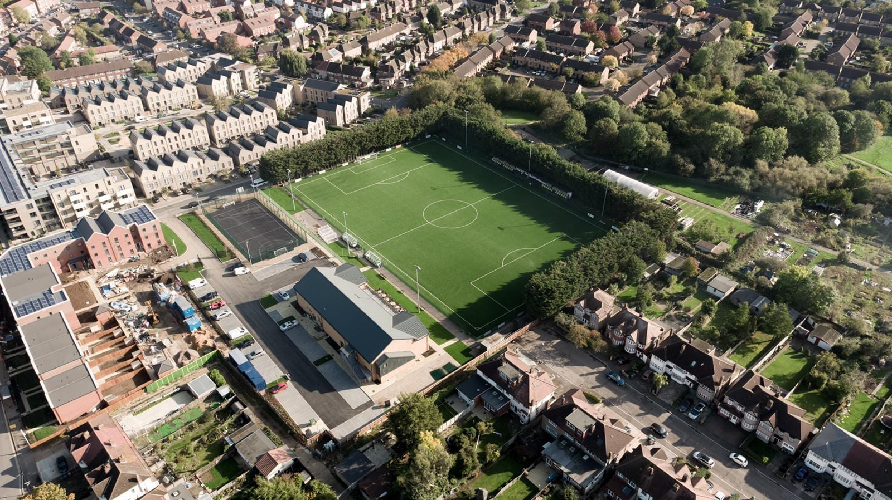

From the Chairman
"Yellow kit. Harrow heart.
This is The Lane."
Pete Singh — Club Chairman
Rayners Lane FC. Community built, Harrow proud. Yellow first, always. The Lane backs itself — since 1933.
Welcome back, .
Your Lane Card, your programmes and your match history are waiting.
Acerbis supply the yellow & green The Lane wears — our 2026–27 playing kit, provided free. An Italian family firm making sportswear since 1973.
"Yellow kit. Harrow heart.
This is The Lane."
You don't have to play to belong. Three ways to make The Lane yours — pick one, or all three.
Our home. Tube: Rayners Lane station (Piccadilly & Metropolitan lines) is a short walk away. Tithe Farm Social Club bar open on match days.
The straight answers — for supporters, players, sponsors, groundhoppers and anyone who just asked the internet who we are.
Rayners Lane FC are a community football club founded in 1933 in Harrow, Middlesex, nicknamed “The Lane”. We play at Tithe Farm Sports & Social Club and compete in the Combined Counties Premier Division North, at Step 5 of the English football pyramid. The club takes its name from the local district it has represented for over 90 years.
Rayners Lane FC play at Tithe Farm Sports & Social Club, 151 Rayners Lane, Harrow HA2 0XH — minutes on foot from Rayners Lane Underground station on the Piccadilly and Metropolitan lines. Broadfields United groundshare at Tithe Farm, so some “away” fixtures are played here too.
Rayners Lane FC compete in the Combined Counties Football League Premier Division North for 2026-27, at Step 5 of the English football pyramid (the ninth tier). The club moved to the Combined Counties League ahead of 2025-26, having previously played in the Isthmian League South Central Division.
Rayners Lane FC were founded in 1933 in the Harrow area of Middlesex. The club’s proudest moment came in 1982, winning the Hellenic League Division One title and promotion to the Premier Division. Its deepest FA Cup run was the Second Qualifying Round in 1992-93.
Pete Singh is Club Chairman and Gary Pitt is First Team Manager. Martin Noblett is Club President, Nigel Hanlon is Vice Chairman and Emma Galloway is Club Secretary.
Email info@raynerslanefc.co.uk to ask about trials. Rayners Lane run open trials at Tithe Farm before the season. We’re a Step 5 club in the Combined Counties Premier Division North, so players of a good local standard are welcome to get in touch.
Email info@raynerslanefc.co.uk. The club offers shirt, matchball and board sponsorship and works with local Harrow businesses. Sponsoring a Step 5 club puts your name in front of a real community every Saturday.
The next fixture and a live countdown are always at the top of this page and on the fixtures page, which lists the full 2026-27 season with dates, kick-off times (UK time) and grounds — plus directions to every away ground.
